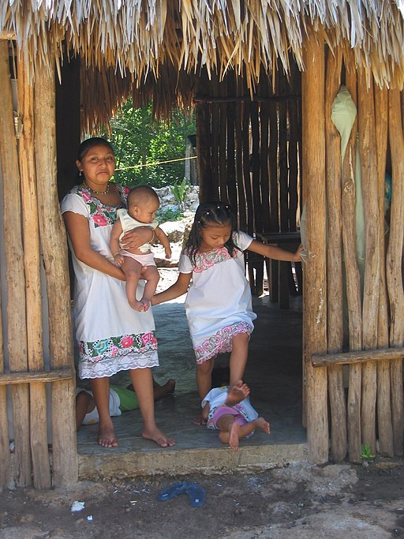
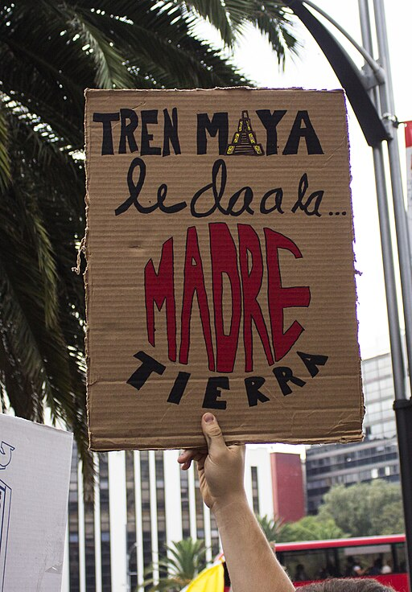

Conceptos básicos en antropología
Es momento de continuar con esta maravillosa aventura.
Ahora nos dirigiremos, a la península de Yucatán en el año 2021 (hace ya algunos años), durante las protesta en contra del Tren Maya, llegamos a una comunidad indígena maya, donde te sorprende el contraste entre la riqueza cultural y la pobreza material: ves gente con trajes típicos, casas de madera y paja, cultivos de maíz y frijol, pero también ves falta de servicios básicos, marginación, discriminación. Te detienes a escuchar las historias, las tradiciones, las creencias.

Familia maya. Imagen de Henrique Matos. Wikimedia Commons
Un grupo de personas se dirige a una asamblea comunitaria, te acercas a ellos y te dicen que van a discutir sobre el Tren Maya, un proyecto impulsado por el gobierno federal que pretende construir una red ferroviaria que conecte los principales destinos turísticos del sureste del país. Te cuentan que consideran que el Tren Maya es una amenaza para su su y su ya que afectará sus territorios, sus recursos naturales, sus sitios sagrados y su forma de vida. Te dicen que el Tren Maya es una imposición del gobierno, que no los han consultado, ni respetado sus derechos. Te dicen que este proyecto es una expresión de la superioridad de una cultura sobre otra, de la exclusión y la negación del otro, es decir del
Ahora nos alejamos de la comunidad indígena y nos encontramos en Valladolid, una ciudad de Yucatán, donde se encuentra una de las estaciones del Tren Maya. Allí puedes observar un ambiente diferente al de la comunidad indígena: la gente parece más moderna, más dinámica, más optimista. Te enteras de que hay un “boom” económico provocado por el Tren Maya, que ha generado empleos, inversiones y desarrollo. Los empresarios aplauden al gobierno por impulsar el proyecto, mientras que los trabajadores y los turistas disfrutan de sus beneficios. Te acercas a un guía de turistas y te comenta que considera que este proyecto es una oportunidad para conocer la diversidad, la identidad y el patrimonio cultural del sureste mexicano, ya que facilita el acceso a lugares históricos, naturales y culturales, además hace hincapié en que el Tren Maya es una muestra de progreso, de modernización, de integración, te comenta es una expresión de la igualdad y el respeto entre las culturas, y de interculturalidad, de la convivencia y el diálogo entre ellas. Todos estos elementos hacen referencia a un concepto muy importante en antropología: la
Por otro lado, también se puede hablar de multiculturalidad, que se refiere a la coexistencia de múltiples grupos étnicos, culturas, religiones y tradiciones dentro de una misma sociedad o comunidad, esto implica que se acepta la diferencia entre los grupos que integran la comunidad, sin embargo no siempre se da el respeto, sino la tolerancia.

Otros contextos
A continuación te mostramos ejemplos de algunos de los conceptos que son relevantes para la antropología, específicamente diversidad, alteridad, y etnocentrismo. Da clic en el icono de H5p y revisa las frases asociadas con cada tarjeta, luego da clic sobre la tarjeta para ver de qué concepto se trata, ¡y eso es todo!
Continuamos el viaje para ir a la Ciudad de México. Allí ves un ambiente diferente al de la ciudad del sureste, hay activistas que parecen más informados, más críticos. Te enteras de que hay un movimiento social contra el Tren Maya llamado “ Sélvame del Tren”, que denuncia sus impactos negativos en el medio ambiente, en los derechos humanos y en la cultura maya.

Protesta contra el Tren maya. Imagen de Francisco Colín Varela. Wikimedia Commons
Algunos de los activistas tienen una visión en la que analizan los impactos del tren desde la perspectiva de las comunidades indígenas que habitan en las inmediaciones de la ruta del tren, además analizan los impactos ambientales, sociales y culturales que tendrá. Asimismo, la postura de los empresarios y turistas también es una postura diferente, en la que se ve claramente que analizan la situación desde el impacto económico que tendrá el tren, por lo que también es una visión relativista.
Los activistas exigen al gobierno que detenga el proyecto o que lo modifique para garantizar su sustentabilidad y la participación social, al acercarte a un grupo de personas que están realizando una manifestación, te explican que son miembros de una organización no gubernamental que defiende los derechos de los pueblos indígenas, y que según sus estudios el Tren Maya representa un riesgo para la diversidad, la identidad y el patrimonio cultural del sureste mexicano, ya que provocará deforestación, contaminación, desplazamiento y que acelerará el en las comunidades indígenas, promoviendo la deculturación.
¿Consideras que el cambio cultural es algo malo? El contacto y el intercambio con otras sociedades pueden llevar a la adopción de elementos culturales de otras comunidades. La aculturación, que es la adopción de algún rasgo proveniente de otra cultura. La deculturación que es, por el contrario, la pérdida de algún rasgo de la propia cultura. Ambos fenómenos ocurren en cualquier cultura y, en sí mismos, no tienen nada que ver con la identidad cultural. La transformación puede ser tan profunda que implica un cambio global de una identidad cultural a otra, aun cuando en la práctica cotidiana persisten ciertos rasgos que connotan los orígenes culturales que ya se han rechazado. Este proceso se llama transculturación.
Además los activitas te dicen que el Tren Maya es una violación de los convenios internacionales, de la legislación nacional y de la voluntad popular, tienen la postura de que es una expresión de neocolonialismo, de la dominación económica y política de una cultura sobre otra, y de homogeneización, de la pérdida y el olvido de la diferencia.
¿Esta última parte te recuerda a algún concepto que acabamos de revisar? Así es, los activistas hacen referencia al etnocentrismo.
Estas distintas posturas respecto al Tren Maya puedes verlas en el ensayo de Luis A. Várguez (2022), titulado “El Tren Maya, o crónica de una historia ya vista”. Si te interesa saber leer el ensayo, puedes revisar el de la página 195 a la 228 del libro “¿Hacia un nuevo proyecto de Nación?”. Da clic a continuación para descargarlo, luego vuelve aquí para continuar.
Es momento de regresar a nuestro tiempo y analizar lo aprendido. Seguramente has notado que el conflicto del Tren Maya plantea algunos desafíos para la antropología, pero también algunas oportunidades. La antropología puede ayudarnos a comprender las causas y las consecuencias del conflicto, así como las posiciones y los intereses de los actores involucrados, además puede ayudarnos a analizar los conceptos de diversidad, identidad, alteridad, etnocentrismo, relativismo, cambio cultural y patrimonio cultural, que son fundamentales para entender la realidad social y cultural del sureste mexicano.
Asimismo, la antropología puede ayudarnos a proponer soluciones alternativas al conflicto, basadas en el diálogo, el respeto y la participación de todos los sectores, incluso puede ayudarnos a ser más conscientes y más responsables de nuestro papel como ciudadanos y como viajeros.
Conceptos básicos en antropología
Veamos qué tan claro están los conceptos que acabamos de revisar, todo está preparado para el siguiente desafío.